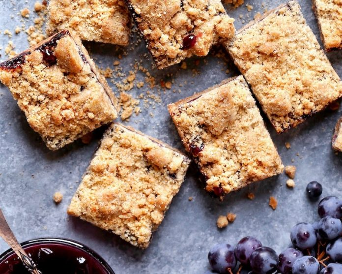

Grape and Peanut Butter Crumb Bars

Description
A sweet spin on peanut butter and jelly in the form of jam bars with peanut butter crust and crumb topping.
Recipe Credits
Ingredients
- 1/2 cup (128 grams) creamy peanut butter
- 1/2 cup (113 grams) unsalted butter
- 1/2 cup (100 grams) granulated sugar
- 1/2 cup (110 grams) firmly packed light brown sugar
- 1 teaspoon (4 grams) vanilla extract
- 2 cups (250 grams) all-purpose flour
- 1/4 teaspoon (1.25 grams) baking soda
- 1/4 teaspoon kosher salt
- Concord Grape Jam (recipe follows)
For Concord Grape Jam
- 2 cups (300 grams) Concord grapes
- 1/2 cup (100 grams) granulated sugar
- 1 1/2 tablespoons (22.5 grams) water, divided
- 1/8 teaspoon kosher salt
- 1/8 teaspoon ground cloves
- 1 1/2 teaspoons (4.5 grams) cornstarch
Instructions
- Preheat oven to 350°F (180°C). Line an 8-inch square baking pan with parchment paper, letting excess extend over sides of pan.
- In a small saucepan, heat peanut butter and butter over medium-low heat until melted and smooth. Transfer to a large bowl; add sugars and vanilla, whisking until combined.
- In a medium bowl, whisk together flour, baking soda, and salt. Add flour mixture to peanut butter mixture, folding until combined. Reserve 1 cup (230 grams) dough for
topping; refrigerate until ready to use. Press remaining dough into bottom of prepared pan.
- Bake until lightly golden brown and set, 14 to 20 minutes. Let cool on a wire rack for 15 minutes.
- Pour Concord Grape Jam over prepared crust, and spread with an offset spatula. Sprinkle reserved 1 cup (230 grams) dough over filling.
- Bake until topping is golden and filling is bubbly, 30 to 35 minutes. Let cool completely in pan, then freeze for 15 minutes. Using excess parchment as handles,
remove from pan, and cut into bars.
For Concord Grape Jam
- In a medium saucepan, bring Concord grapes, sugar, 1 tablespoon (15 grams) water, salt, and cloves to a boil over medium heat. Reduce heat to low, and simmer for 10 minutes.
Press mixture through a fine-mesh sieve into a bowl; discard solids. Return mixture to saucepan.
- In a small bowl, stir together cornstarch and remaining 1/2 tablespoon (7.5 grams) water. Add cornstarch mixture to saucepan. Simmer, stirring constantly, until mixture is slightly thickened, about 3 minutes.
Back to Home Page